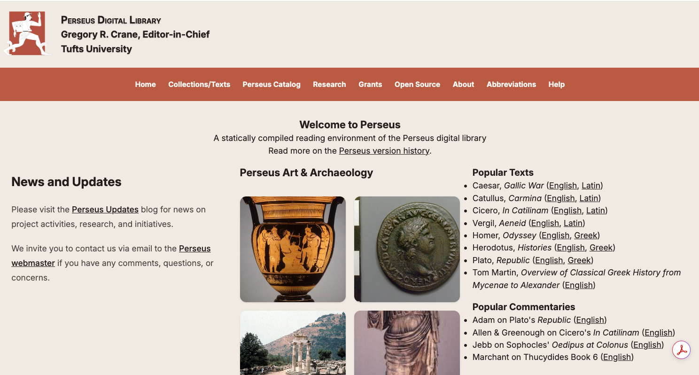
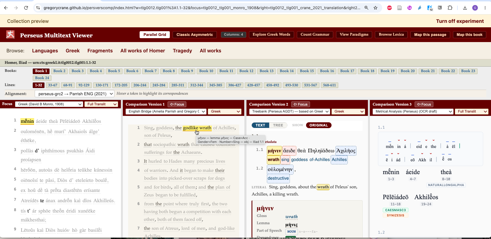
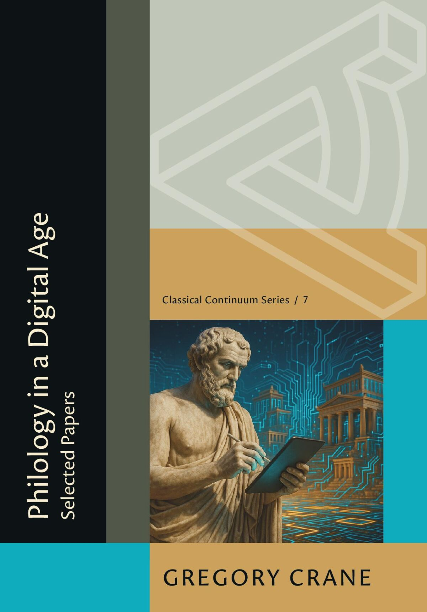

Professor and Chair, Department of Classical Studies, Tufts University
Winnick Family Chair of Technology and Entrepreneurship
Adjunct Professor of Computer Science
Editor-in-Chief, Perseus Digital Library


μανθάνειν οὐ μόνον τοῖς φιλοσόφοις ἥδιστον ἀλλὰ καὶ τοῖς ἄλλοις ὁμοίωςLearning is a great pleasure, not only for philosophers but for everyone else as well. — Aristotle, Poetics 1448b13
I work on how people read the languages and sources of the ancient world, and on how digital methods can widen the circle of those who are able to do that reading. Most of this work happens through the Perseus Digital Library, which has been publishing primary sources for the study of antiquity since the late 1980s. This page gathers current projects and some of the working materials behind them; much of it is unfinished and changes often.

This volume collects essays from more than four decades of work, from the first Perseus proposals of the late 1980s to recent reflections on large language models, open data, and the place of Greek and Latin in a multilingual world. Read together, they trace how Greco-Roman philology has changed as its infrastructure moved from print to digital media, and they make a case for a field that keeps adapting to new technologies while remaining open and inclusive. Several of the pieces are published here for the first time.
Book page at Harvard University Press →
For more than twenty years, the current Perseus Digital Library (P4) has been the main home for Perseus collections. It has become hard to update and is prone to outages under automated scraping. Perseus MVP, now in public beta, is our effort to keep it available over the long term. It compiles the TEI collections that Perseus maintains into static pages delivered by a simple web server, and all computation happens in the reader’s browser. It keeps the familiar P4 reading experience of texts, translations, and click-to-look-up words with Logeion, LSJ, and Lewis & Short. It also adds content not found in P4, including draft digital versions of critical editions, commentaries, and dictionaries. Several P4 features, such as corpus search and cross-references, are still to come, and we would be grateful for reports from those who use it.
The implementation is by Charles Pletcher, building on a design by Clifford Wulfman and on decades of curation by Lisa Cerrato, Alison Babeu, and others. Support from the National Endowment for the Humanities (“Perseus on the Web: Preparing for the Next Thirty Years,” PW-290565-23) let us prototype the rebuild on the Scaife Viewer and will help us add new features. The Schmidt Sciences Beyond Translation project made it possible to build the new serverless version and, with it, a more sustainable infrastructure.
This is my experimental environment for trying out new features and new content. Some of what proves useful here, though not necessarily all of it, is meant to feed into Perseus MVP.
A reading environment in which a text appears beside its translations, commentaries, word-by-word linguistic annotation, lexicon entries, and manuscript images, all aligned to the same passage. It runs as a static website with no server behind it, which keeps it inexpensive to host and easier to preserve. Alongside Greek and Latin it already includes Arabic, Persian, and Japanese texts, and it is meant over time to cover the canonical Greek and Latin corpus. The code and data are open, and corrections are welcome.
With support from the National Endowment for the Humanities, we are bringing together the Greek text of the Poetics, its Arabic and Latin transmissions, and modern translations as a step towards a variorum edition. The Poetics also serves as the main test case for how the Viewer presents a work that has travelled across languages.
Perseus is currently supported by the Schmidt Sciences Humanities and AI Virtual Institute (HAVI) (“Beyond Translation: Opening up the Human Record”), the National Endowment for the Humanities (“Perseus on the Web: Preparing for the Next Thirty Years,” PW-290565-23; and “Aristotle’s Poetics in Greek, Arabic and Latin: Towards a Variorum Edition,” RQ-306857-26), and Tufts University.